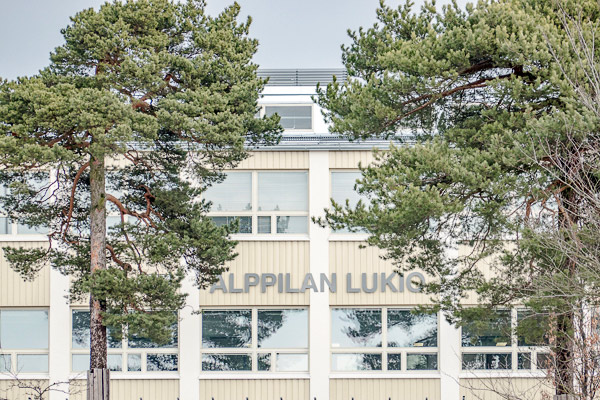
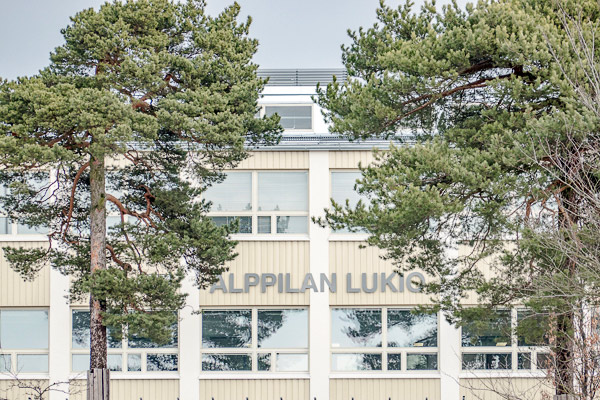
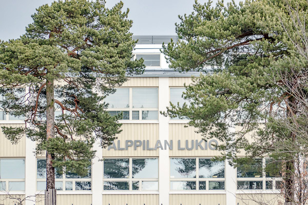

Tekniikka puolella voi lukea elektronisista laitteista, joita on päätetty hankkia ja siellä kerrotaan myös matkasta koodariksi. Koodarina matka on Web-kehittäjäksi ja ensimmäiseksi tavoitellaan frontendin masterointia.
Tervetuloa lukemaan nuoren urheilija, lukiolaisen ja tekniikka nörtin blogia. Täällä pääsee kuulemaan jalkapalloilijan elämästä, kuinka kausi sujuu ja minkälaista treenaaminen on. Koulusta kerrotaan minkälaista lukio ja itsenäisempi opiskelu on.

Tekniikka puolella voi lukea elektronisista laitteista, joita on päätetty hankkia ja siellä kerrotaan myös matkasta koodariksi. Koodarina matka on Web-kehittäjäksi ja ensimmäiseksi tavoitellaan frontendin masterointia.